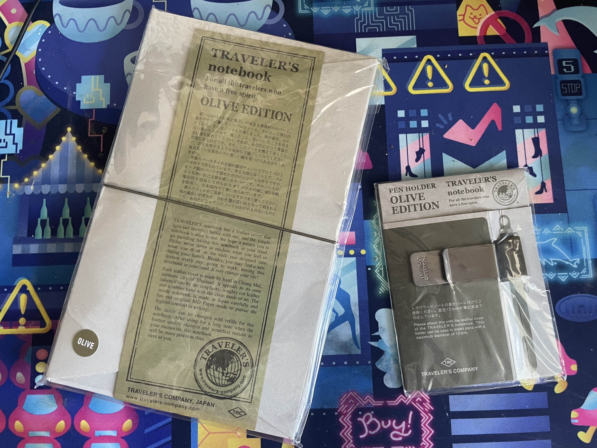
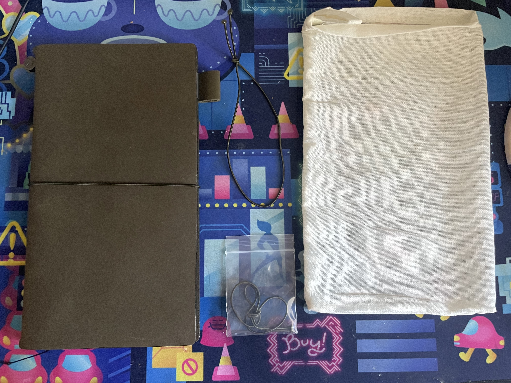
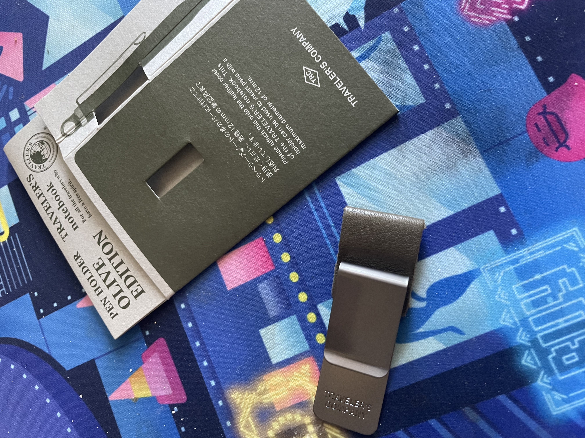
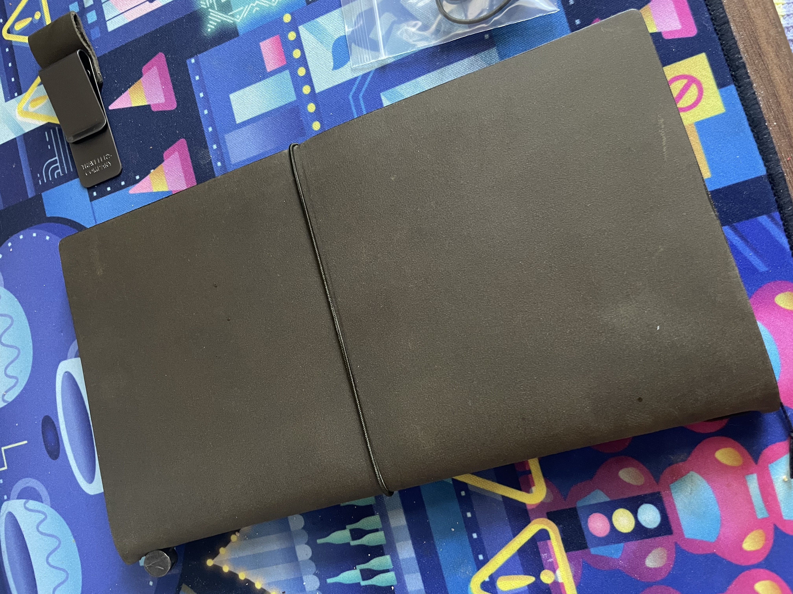

TRAVELER'S COMPANY OLIVE TRAVELER'S NOTEBOOK (UNBOXING / REVIEW)
Yup, here comes another review about a limited edition traveler's notebook. "But, Victor!" you cry out. "You just bought the Diner Traveler's Notebook!" Yeah. I know. I'm prone to spending a lot of money on material things that give me joy. Psychoanalyze that how you will. But to be fair, this wasn't really that much of an impulsive decision.
This time, this is a review on my "unicorn" notebook, something I dreamed of owning for almost two years.
The Olive Traveler's Notebook was a traveler's notebook color that only became available in 2017. Once the initial stock completely sold out, Traveler's Company just chose not to produce it anymore, unlike its black, brown, camel, and blue counterparts. The latter colors became a regular lineup of color options for the company's notebook covers, and sadly the olive color wasn't popular enough to justify producing yet another batch of them.
Well, it wasn't popular enough for mass production, but popular enough to be highly coveted in the traveler's notebook community. Because of how limited the inventory was for this color, a brand new Olive Traveler's Notebook can run up to $400-500 USD on eBay. Surprising or not, people are still more than willing to pay these prices.
Including myself.
My favorite color is green. More specifically, I'm in love with muted green color schemes - olive, forest, matcha, etc etc. When I first laid my eyes on the Olive Traveler's Notebook, I fell in love with it. I dreamed of owning this color ever since, but never justified splurging.
Then, a new eBay listing popped up: a brand new Olive Traveler's Notebook still in its package and its accompanying olive pen holder clip, both for the same price eBay sellers usually ask for with just the notebook alone.
I had dropped some money on the Diner Traveler's Notebook just a week prior, but after weighing out the pros and cons, I decided to throw some more money at this listing and got it shipped to me surprisingly quickly despite it coming from a Japan-based seller.
And I do not regret at all. Let's take a look at the package.

The seller had been explicit in stating that some of its packaging was bent; some of the paper labelling was folded over the cardboard box and the adhesive backing of the plastic packaging was gathering dust. I wasn't bothered by this at all. It may have to those looking to invest and keep it as a collector's item for bigger profits in the future, but it didn't matter to me, since I was actually going to use it.
I love Japanese resellers. They're always so courteous and communicative towards their customers. Inukshajapan, one of the internet's most popular resellers for everything Traveler's Notebook and other Japanese stationery, is someone based in Japan who immediately comes to mind, always providing little free goodies and origami in addition to a kind, handwritten letter with every order he ships out. This eBay seller was so communicative with me, messaging me about the estimated time in which they'd ship the order, when it would be expected to arrive, and so forth.
Since it was going to be shipped out from Japan, I expected that it would take a while for it to arrive. But no, it arrived within a week since I ordered it without any issues. I was so impressed by this, and so grateful.
Let's take a closer look at what's inside both items!

Like typical Traveler's Company traveler's notebooks, the Olive Traveler's Notebook came with the notebook cover, of course, as well as a spare elastic band in case you need to replace the band that keeps the cover closed, a cotton bag to store it in (although not as cute as the diner traveler's notebook's cotton bag due to the lack of decor), and another spare elastic band that was used to initially keep the package itself together.

The olive pen holder needs no explanation: it's the pen holder and the pen holder alone.

From intitial impression, the Olive Traveler's Notebook is just as gorgeous as I hoped it would be. It's a beautiful muted green, as is the pen holder, and the shade was just what I desired. Some Olive Traveler's Notebook owners have complained that the olive color is more brown than green, and I do agree with that. But as someone whose first traveler's notebook was a brown one, it is very evident that it is nowhere near similar to the brown traveler's notebook that Traveler's Company sells.
I've taken a picture of both my brown traveler's notebook and the olive one for comparison:

Stacked against each other, it is apparent that the Olive Traveler's Notebook is very much green compared to the brown. In natural lighting, the green-ness of the Olive Traveler's Notebook appears more clearly, while in warm lighting, it appears more brown. This inconsistency doesn't bother me, but it might for other people. I think it just adds further character, and because it's genuine leather, I just know it will age super well and develop a beautiful patina.

Ugh, when I first opened it, I just could not stop staring at it. It was my dream notebook for quite some time, so having it in my hands just felt so surreal. It was a hefty price tag to purchase it, but I justified it with myself that if I waited any longer, the price of the notebook was just going to continue increasing. After repeatedly getting jealous of other TN owners who have it as their primary notebook, I'm so glad I bit the bullet and bought it finally.
The leather is very soft. Like, wow. It's not as soft as the camel color the Diner TN comes in, but it's certainly softer than both the blue Starbucks Reserve cover and regular brown cover that I also own. I also have a passport-sized green traveler's notebook from Galen Leather, and it feels softer than that as well, though Galen Leather uses Crazy Horse leather, which I feel is firmer than what Traveler's Company uses anyway.
As I've said in the diner TN review, it's fine to spend money on a hobby that gives you immense joy. I can't wait to keep journaling in it, and it's definitely going to stay my daily driver for the foreseeable future.

MY CURRENT SETUP FOR IT

I've switched the blue Starbucks Reserve traveler's notebook I've been using all of 2022 for this, which means my personal planners are all in my olive notebook now.
Right now, I have my 2023 monthly insert for future logging, the grid insert I've been using to do basic bullet journaling, another grid insert for my bullet journal specifically for keeping information and plans for my current original novel, and a blank insert I got from a friend to keep as a sketchbook.
Usually when you order from Traveler's Company, they provide you with a free physical newsletter they call Traveler's Times. I would read it, then keep it away and never touch it. But this time, I used origami methods and a lot of washi tape to create a simple paper folder to keep ephemera in. I may write up a tutorial as to how to do this for those who are interested!
I've been using this olive cover for a few weeks now, and I'm in love with it. It's just so nice to use, and it continues to feel so good knowing I have my dream notebook in my hand.
Since I'm using the olive cover now, what am I going to be using the Starbucks Reserve cover for, you ask?
Aha...
[sweats profusely.]